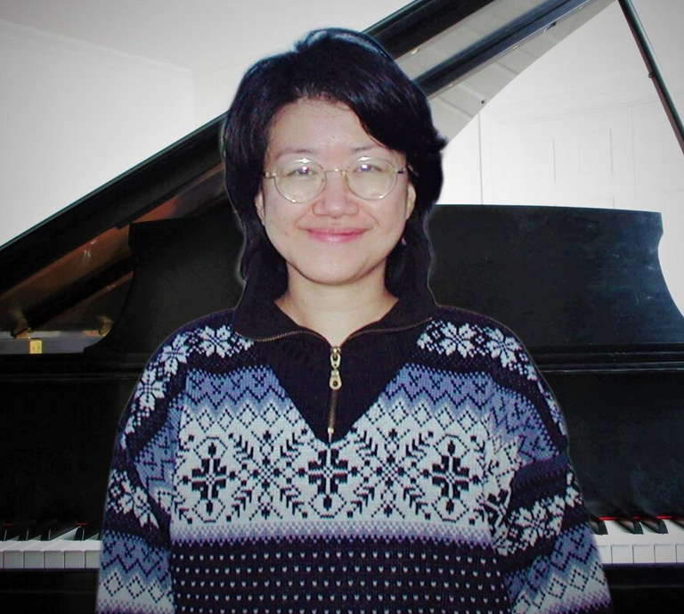

Welcome to Erica Hu's Webpage
Please click the tabs on the navigation bar to explore Erica's life and upcoming performances.
Home (About Erica)
Erica has been playing piano since she was five years old. She won several competitions
before coming to the United States to study at Juilliard School of Music. There she studied
with Adele Marcus and Joseph Raiff.